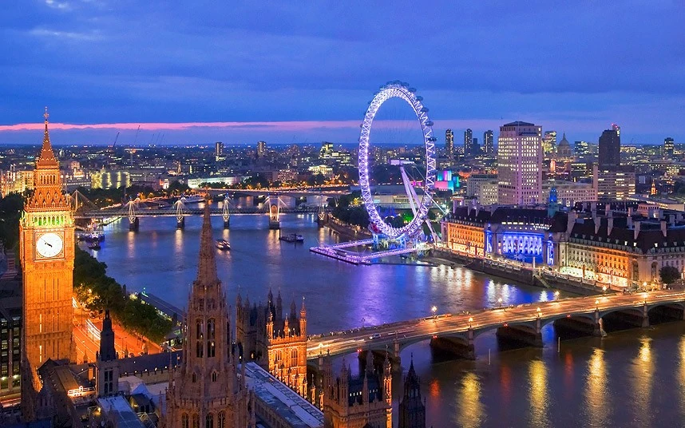
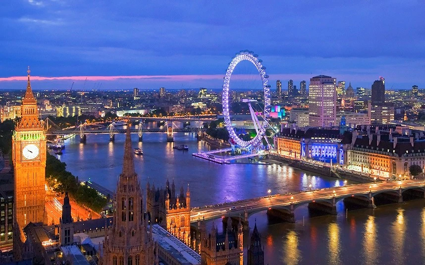

London

London is the capital and largest city of England and the United Kingdom, with a population of just under 9 million. It stands on the River Thames in south-east England at the head of a 50-mile (80 km) estuary down to the North Sea, and has been a major settlement for two millennia. The City of London, its ancient core and financial centre, was founded by the Romans as Londinium and retains its medieval boundaries.The City of Westminster, to the west of the City of London, has for centuries hosted the national government and parliament. Since the 19th century, the name "London" has also referred to the metropolis around this core, historically split between the counties of Middlesex, Essex, Surrey, Kent, and Hertfordshire, which largely comprises Greater London, governed by the Greater London Authority.
History
The history of London, the capital city of England and the United Kingdom, extends over 2000 years. In that time, it has become one of the world's most significant financial and cultural capital cities. It has withstood plague, devastating fire, civil war, aerial bombardment, terrorist attacks, and riots. The City of London is the historic core of the Greater London metropolis, and is today its primary financial district, though it represents only a small part of the wider metropolis. Foundations and prehistory
Foundations and prehistory
Some recent discoveries indicate probable very early settlements near the Thames in the London area. In 1993, the remains of a Bronze Age bridge were found on the Thames's south foreshore, upstream of Vauxhall Bridge. This bridge either crossed the Thames or went to a now lost island in the river. Dendrology dated the timbers to between 1750 BC and 1285 BC. In 2001, a further dig found that the timbers were driven vertically into the ground on the south bank of the Thames west of Vauxhall Bridge.
In 2010, the foundations of a large timber structure, dated to between 4800 BC and 4500 BC were found, again on the foreshore south of Vauxhall Bridge. The function of the mesolithic structure is not known. All these structures are on the south bank at a natural crossing point where the River Effra flows into the Thames.
Archaeologist Leslie Wallace notes, "Because no LPRIA [Late pre-Roman Iron Age] settlements or significant domestic refuse have been found in London, despite extensive archaeological excavation, arguments for a purely Roman foundation of London are now common and uncontroversial."
.jpg) 
